A brief presentation of the Hydrologic Cycle was included in the preceding chapter. My intention was to impress the reader with an important concept: water is a function of the land. Like the land, and things which grow on the land, water too has been badly misused. We may settle in arid regions where streams flow only during cold, non-growing seasons. So we have to divert water from stream channels or impound it behind dams. Then we over-irrigate, causing nitrate leaching and the establishment of pathogenic fungi. Commercial fertilizers and poisonous sprays are then used to counteract these evils. Or we may farm the rich bottom land-but must first drain the meadows and valleys of stored water. The tile drainage systems employed lower the water table and contribute to down-stream flooding. We may cut or burn forests and native grass to graze cattle or plow the land. Then soil-depleting cultivated plants replace native vegetation: tillage practices leave the land stirred up and exposed to the ravages of wind and rain. Agriculture then becomes, for the most part, an occupation dealing with floods and drought, erosion and infertility, insects and diseased plants.
Consequently, as a function of the land, water and water management become very closely interrelated to soil and the way in which soil is used. Organisms and plant roots living in the soil remove oxygen and respire carbon dioxide. This free movement of carbon dioxide out, and oxygen into the soil is a first criterion of healthy plant growth. Standing surface water, for instance, may contribute to crop damage by impeding this action. Flooded soil encourages undesirable bacterial transformations: when soil aeration is poor, plant roots have difficulty in excreting carbon dioxide, and beneficial aerobic (airborne) microorganisms cannot function. Anerobic (waterborne) micro-organisms then take over and reduce valuable nitrates to toxic nitrite and gaseous nitrogen.
A leaching action-caused from excessive rainfall or irrigation-also contributes to an impoverished soil-condition by washing essential nitrates through the soil profile. The effect of percolating water on a soil's nutrient reserve depends a lot on the structure and texture of the soil. Heavy (clay type) soils will hold more water without nutrient leaching. The structural aggregates of heavy soils retain nutrients as they allow water, to drain around them.
Tillage operations also impede plant growth-mostly through compaction of the soil. Heavy equipment compaction reduces oxygen diffusion as well as obstructing root growth. Contrary to popular opinion, even light tillage wastes more soil moisture than it saves. As particles of soil are stirred up by tillage equipment, all sides are exposed to the air-which permits that much more moisture to evaporate. No more moisture is available to a crop which is cultivated than is available to a comparable crop uncultivated. One despairs at the wasted effort in "dust mulching": once a dry layer is formed on the surface of the soil, no amount of hoeing or cultivating can appreciably reduce the evaporation rate. And the common practice of lightly cultivating immediately after irrigation can be even more detrimental to a crop. Cultivated soils tend to cake and crust on wetting and drying: few empty pores remain where oxygen can diffuse, and water is held against drainage. Cultivation destroys surface "feeder" roots. And for other reasons, too, (which will be detailed in the following chapter) the Roto Tiller is seen as the most undesirable piece of equipment employed on most "organic" homesteads.
A proper water management program can be established once one understands the basic principles of water usage in relation to the growing plant and in relation to the soil. When it rains-or when one irrigates-old air is forced out and new air is pulled into the soil by the downward water movement. In its passage through the atmosphere, water absorbs traces of carbon dioxide which make it slightly acid. Certain minerals are thereby partially dissolved by this acidity: water acts as a solvent for the carbon dioxide and oxygen that the plant obtains from the atmosphere. Water is also the medium through which the plant obtains nitrogen and mineral nutrients from the soil to the plant and combines with nutrients entering plant leaves directly from the air.
In a "good" soil (as defined in the following chapter on Soil Management) water is quickly absorbed. A certain amount of reserve is held in the soil by a sponge effect (2/3 saturation is considered an optimum water content of most soils). Excess water is held in the water table. The minimum permissible depth of the water table depends upon the crop being grown: fruit trees, for instance, require a deeper water table than does grass.
The first principle, then, of proper water management is to increase the subsoil water storage capacity at depths where it will be free from evaporative losses. Water in subsoil depths should benefit the plant through a low "capillary" feeding of the root system. When one realizes that wheat, beans and peas, for instance, use about 200 pounds of water for every pound of dry matter produced, one can better appreciate the importance of this dynamic subsoil water storage. Again, the amount of water transpired for each pound of dry matter produced is much less on good soils than on poor ones.
As water transpires from a leaf, it has to absorb heat in order to vaporize. This is one way by which water regulates the temperature in a plant. During the middle part of a sunny day, the photosynthesis process can be reduced by sprinkling the plants during this hot, midday period.
The cooling effect of midday sprinkling consequently reduces respiration and increases net photosynthesis. The time-worn advice about sprinkling only during the cool evening hours of the day is just one more old-wives' tale.
It doesn't take a very long farming experience in a semi-arid region to fully appreciate some basic water management concepts. For one thing, one should try to control as many environmental growth factors as possible-so that water becomes the one limiting factor. Someone found that the application of manure to unfertile soil reduced from 500 gallons to 300 gallons of water required to produce 1 pound of corn. Proper fertilization is essential for an extensive and vigorous root development-which is in turn necessary for an effective exploitation of subsoil moisture. Surface evaporation can be significantly limited by mulch planting.
More will be said about mulch planting in ensuing chapters, but to the extent that mulch saves water and soil, it should be touched upon here. Mulch planting is the planting of new crops directly in the residue of the previous crop without prior land preparation. Crop residues left on the soil through winter helps to conserve water through absorption, and also in the form of accumulated snow that would otherwise be blown off.
Contour farming is becoming widely used on sloping land. Planting on the contour naturally reduces the velocity of water movement: more water is conserved through soil infiltration and percolation.
Crop management practices can become further methods of controlling environmental growth factors. The earliest safe planting date should find seed in the ground. This enables the seedlings to utilize accumulated winter moisture and at the same time lowers the evapo-transpiration rate. Crop sequence is also important: shallow rooted row crops like corn do not fully utilize available soil moisture; deep rooted crops like grains do. So one is prudent to follow-up a corn crop with grain or alfalfa-which will benefit from the soil moisture untapped by the corn.
Fallowing is a common farming practice where the distribution of rainfall is uneven and sparse. The land is not cultivated, but allowed to store water for use by the next crop. That is, one crop is grown from moisture received in 2 years. Fallowing is an inefficient method of moisture conservation, but does illustrate the extent to which water can be stored in a heavy soil.
It is well-nigh impossible to indicate how much water a given plant requires during its growing season. For one thing, soil properties have a great bearing on moisture retention: the coarser the particle, the less water it will hold. Sandy soils have a capacity of less than 1-inch of available water for a foot depth, whereas clay soils retain more than 3 inches. For a vegetable garden, an equivalent of 1-inch of rain is considered adequate in a single downpour: a garden 1/10 acre in size requires 3000 gallons! Most vegetables require .10 to .20 inches of water a day or about 3 to 9 inches a month. Research at Kansas Experiment Station disclosed some interesting facts about irrigation: wheat seeded in dry soil yielded 5 bushels per acre; where the soil was wet 1 foot deep, the yield was 9 bushels; soil wet 2 feet deep yielded 15 bushels; soil wet 3 feet deep yielded 27 bushels.
The competition between plants for available water is fierce. Small plants, for instance, have little chance for survival when they are within reach of tree roots. Crop yields can be increased in very dry seasons by increasing the distance between rows. This reduces the demand for water during the early part of the growing season, which therefore increases the amount of soil water available as the plant approaches maturity. In cases where land is plentiful and water scarce, it has been found to be more efficient to irrigate a large area with a small amount of water, than it is to irrigate a small area with a small amount of water. Seven inches of water on 4 acres produces three times the crop yield of 30 inches applied to 1 acre. Irrigation is a Pandora's box: its use raises the lid of many problems. These problems are associated mainly with soil management: drainage, soil structure, aeration, leveling, organic matter, mineral deficiency and toxicity, salt accumulation and general soil infertility. As pointed out in the previous chapter, water development has subtle but far-reaching influences: the hydrologic balance can be easily upset by man tampering with his environment. Introducing irrigation into a valley is an especially good example of how this balance can be upset. More particularly, one's homestead soil and plant population can be adversely affected-especially in arid regions. Irrigation water contains salt. Most of the water applied evaporates-either through the plant or on the soil surface. The salt remains, and must be washed away into the subsoil below the root zone, or into drainage canals. About one-fourth the amount of water used in irrigation is thus used to wash the salt out of the growing zone. And with the bath water goes the baby: most irrigated soils suffer severe nitrogen and phosphate deficiencies caused from the leaching of plant nutrients.
An accurate prediction of a soil's drainage requirements thus becomes the first element in selecting land for irrigation. As previously illustrated, water drainage through a sandy soil is .more than twice as rapid as through a heavy, clay soil. Soil depth, degree of land slope, and regularity of topography also influence irrigation procedure. Any amount of land leveling can be very expensive. Sandy soils which erode readily should be limited to low slopes. Clay and gravelly soils can be irrigated on steeper slopes without so much danger from erosion.
Actual water supply is another, equally important consideration for the selection of an irrigation method. Supply should, of course, be adequate and reliable. A small, constant-flow stream is adaptable to sprinkler irrigation whereas a large intermittent stream is adaptable to surface irrigation. To achieve the maximum utilization of soil and water, deep rooting into the subsoil should be encouraged. Light irrigations applied frequently will restrict root penetration and increase the degree of drought damage when dry periods occur.
Soil and water factors favor one or another of six different methods of irrigation. These can be summarized in table form:
A small farm pond is practically an essential requirement of every owner-built homestead. As a reservoir, it becomes ideal for any type of crop-irrigation program. It can be used for livestock watering, for raising fish, ducks and geese. The fringe benefits of a farm pond are many: for recreational uses the pond can function for summer swimming and winter skating. It also serves as a convenient water source in case of fire.
Without question there have been more unsuccessful pond building attempts than successful ones. Reasons for failure are many and varied. There isn't space here to go into all the engineering details of small dam construction, but some of the obvious criteria should at least be mentioned.
Keep several things in mind when choosing a pond site. First, seek a site that offers the maximum amount of storage area with smallest dam practicable. Ideally the site will be located at a point higher than the homestead-for possibilities of gravity-flow irrigation. A steep-sided valley where the stream runs slow is ideal: the greater cross sectional rise the shorter the dam; the flatter the longitudinal section the further upstream water will be impounded.
Second, investigate the geological strata closely. A concrete dam is a practical consideration where outcropping of granite or basalt extend across the valley or near the surface or where a good rock foundation is present. Other types of loose rock outcroppings along the banks should be avoided. Sometimes a shallow layer of soil will cover objectionable gravel and shattered rock. Ideally, for an earth fill dam, a site having a large percentage of clayey material with some silt or sand should be chosen. Too much clay causes cracks when dry and slippage when wet; too much sand causes seepage percolation.
An adequately designed spillway is most important in farm pond construction. The purpose of the spillway is to carry away surplus runoff: it may consist of a mechanical-type control or a drainage ditch planted to some protective ground cover. This latter type spillway should be clear of the dam and cut out of solid ground.
Farm pond management is another very much involved topic-and again will only be briefly touched upon here. A pond managed for wildlife, fish and recreation should be fenced. This will protect the spillway, fill and pond-edge from livestock trampling. A sharp bank should be maintained around the perimeter of the pond to avoid warm and stagnant water. Water less than 2 feet deep has little value for fish, and shallow water encourages mosquito and weed growth.
Tree, shrub, and deep-rooted legume growth should be discouraged from growing on the fill. Trees planted around the pond should be coniferous varieties-not broadleafed-to minimize evaporation. A row of correctly placed conifers will reduce evaporation losses by sheltering the pond from winds which might otherwise ruffle the surface of the water. A wave action increases the evaporation manifold. Wave action and rain action are the major sources of erosion in a pond.
Erosion from rain may be a fitting subject on which to end this chapter. Erosion is like pollution: it suggests some grave mismanagement practice at some distant point of origin. With erosion, it is the whole system of agri-business which is at fault. Rains, for instance, are heaviest during that part of the growing season when row crops are least able to provide ground cover. This fact suggests a different practice, one that allows a ground cover and row crop growth simultaneously. Some far-sighted agriculturalists found that when weeds were grown with corn, the corn yield increased.
Weeds are not the water robbers that people once imagined them to be: they are actually conditioners of the soil. Weed growth can open up the soil and enlarge the feeding zone of other crops. Crop roots will follow weed roots deep into the subsoil in search of water.
A proper water management requires that the soil is used within its capacity. One's homestead may be sectioned into crop land, pasture, woodlot and wildlife refuge, depending upon soil structure and depth, movement of water and air through the soil, land slope, and susceptibility to water and wind erosion. A complete thesis on soil management is called for at this time. This will be presented in the following chapter.
(The chapter on soil management will be presented in a later issue of MOTHER. - Ed.)
During World War I architect Gaudi was busy developing a new curving free-form architecture in Spain; architect Rudolf Steiner was independently establishing metaphysical credence to the curving freeforms of his famed Goetheanum in Dornach, Switzerland. At the close of the war a group of architecturally disillusioned German designers formed a discussion group for purposes of exploring the problems of establishing an improved house. Gaudi and Steiner were searched out, and a "round-robin" correspondence began which lasted for some 20 years. Mendelsohn, Kiesler and Finsterlin continued in their search for an entirely new free-form building style, but most of the original group were wooed into the more prosperous International Style.
In more recent years a group of younger architects are building upon what was learned from the German pioneers. Foremost among these are the Italian, Leonardo Ricci; the Americans, Paolo Soleri and Bruce Goff; the Brazilian, Oscar Niemeyer; the Mexican, Juan O'Gorman; and the Britishers, Hans Hollein and Walter Pichler.
There is a great deal about the free-form house that is applicable to owner-builder construction. This type of building is not a mere freeflow art form or a return to nature, but, as Kiesler states, "it derives from living a life dedicated to fundamentals rather than to mechanized equipment and interior decoration." The measurements of the final form and shape of the house are determined by actual requirements in height, width, and depth of the various areas designed for eating, sleeping, living and working. Every defined function can be closed off from other areas or opened up, making one continuous space. Finsterlin talked of the New House as being organic: a person inside such a house would be as inside an organism, wandering from organ to organ, "the giving and receiving symbiont of a giant fossil mother body."
Designers of free-form homes feel that there should be a greater independence from our constantly increasing automated way of life. By way of architecture they seek to encourage a more natural way of living. Kiesler talks of basing his house on simple, healthful and direct ways of living, where work can also be recreational.
One basic difference between the free-form building type and traditional houses is that the free-form building is continuous shell, not post and beam construction. The floor of a free-form room curves at the rim into wall, and the wall curves uninterrupted into ceiling. Much thought has gone into the elimination of the flat horizontal plane as the area of movement for people. The traditional solid and opaque floor would cut through a free-form room like a "pathological diaphragm." Glassy, transparent floors were therefore included in the plan:
The bare foot will caress the floor sculptures with every step, bringing new life to the neglected tactile sense and enriching the reactions which nowadays reach the level of our consciousness only as the grossest fragments, instead of as inconceivable delicate and pure melodies of the material world by which we are surrounded.-Kiesler.
Each sleeping section of a free-form dwelling is designed as an individual living room. Private baths may be included in each individual living quarter.
There is continuity of structure in a curving free-form building which makes it more desirable than straight-line types. Conventional structure is put together from separate, articulated pieces, whereas free-form is composed of simple, continuous materials; angles break the flow of the eye but curves lead smoothly from one surface to another. There is also a significant structural. advantage in continuity of structure. Forces applied at any point in a building structure should be distributed in an equal flow throughout. Obviously, these forces are less apt to flow at right angles to one another-which is what we demand of the standard frame or masonry house.
Only the more serious and seasoned owner-builder should attempt to build a free-form structure-with floor curving into wall and wall curving into ceiling. To build thus one must develop a knack for spreading concrete on curving forms (concrete plaster being the best suited material for the job). Regular poured concrete is much too limited because of the necessary straight-edge formwork required. Plaster, however is a plastic form material that all but eliminates elaborate formwork. Plaster is applied to a reinforcement which is itself a form-in the manner of the sculptor's armature, or frame-support.
Lime is the type of plaster used in the earliest civilizations. Nowadays hydrated lime is used as a plasticizing agent, to increase workability of the cement mortar. Diatomaceous earths and fire-clay (mortar creme) are better, as they are less harmful to the workman's skin.
Gypsum and portland cement are the two most commonly used binders in plaster work. A type of waterproof cement called plastic it preferable to common cement, as it spreads easier.
To achieve first quality work, only clean, well-graded plaster sand should be used. Where available, coarser aggregate should be used in the base coats. Vermiculite and perlite aggregates are used where a lightweight, acoustical treatment is desired.
Where plastering is done against a rigid surface, a stucco netting having large openings should be used so that plaster will be pushed through to the backing, completely embedding the metal. A special furring nail is used to attach reinforcement. It holds the reinforcement out at least one-fourth inch beyond the backing, permitting plaster to be forced behind the reinforcement. Expanded metal lath and gypsum lath are used where there is no backing. Again, the plaster should completely cover the mesh.
The correct proportioning, mixing, and application of plaster is essential for quality results. The table included here will assist the owner-builder in his selection and use of the common types of plaster. With some trial-and-error experiences one can soon develop a facility for spreading plaster. It is also important to buy and become familiar with the right plastering tools: a high quality steel trowel for application; a lightweight hawk for carrying mortar; a wood float for gliding over the surface, filling voids and leveling bumps; a darby for preliminary smoothing and leveling.
There are methods of free-form construction other than plastering over an armature framework. Architect Paolo Soleri demonstrated one method when he built his 25 ft. wide by 35 ft. long desert home. A huge mound of sand was first piled up. The mound was then scored with V-shaped indentations into which reinforcing bars were placed. Wire mesh was then laid over the entire mold, after which a 3-inch-thick layer of concrete was poured. When the concrete was set a small bulldozer was used to excavate the material under the concrete shell, piling it on either side of the building. The floor level is 6 feet below ground level and the concrete roof meets the desert floor on the two long sides. Both ends open into excavated patios.
The final form of Soleri's "earth house" is not unlike Frank Lloyd Wright's berm-type building, designed for cooperative homesteads in 1942. Wright pushed dirt up against the outside walls. Good insulation and protection from the elements was offered; it was economical construction in that the outside walls below window sill level did not have to be finished.
Earth forms have also been used in certain types of lift-slab construction-a technique nicely adapted to free-form building procedure.
In 1956 Lawrence Caster invented a simple method for building conical dome adobe houses. Experiences in Mexico demonstrated that anyone with even the most rudimentary skill in masonry construction can erect this all-adobe house. (Total cost: 60 working days and $28.64 for materials.) Carter's positioning machine is designed to serve as a guide in laying the adobe walls. It consists of a short arm revolving about a center pole in a horizontal plane at floor level. From the outer end of this arm run two parallel longer arms which extend back past the center pole to the wall on the opposite side. These arms raise and lower as well as support a shaped wooden guide against which the adobe blocks are laid. Complete drawings for building the machine will be sent upon request.
In Europe a number of circular masonry houses have been built. But except for Carter, no one has been sufficiently dedicated to the circular wall to engineer a system of construction which would make this type of design entirely feasible if not more economical than conventional types.
One such system of circular wall construction involves the use of a central pipe and a radius-wire controlling circumference of the outside walls of the house. I first experimented with this technique using the Magdiel Form to build rammed earth, concrete, and stone walls 6 to 24 inches thick. The principle is entirely sound; so long as the central pipe is set straight and plumb, the walls will likewise be plumb. A spacing radius-wire is attached from the form to the central pipe, and as the wall progresses in height the wire is raised to a new position level with the form. The lever mechanism of the Magdiel Form permits immediate release of the form walls.
The same technique can be employed in building thin-shell circular concrete walls. After establishing the vertical radius pipe, the concrete floor slab is poured, using a screed board that revolves around the radius pipe. To build the walls, a 5-inch high by 3-foot long aluminum form is merely filled with concrete mixture and moved (while the mixture is still wet) forward to a new position. A continuous length of barbed wire for reinforcement is used in each layer, which spirals from foundation to roof. The form and construction procedure is similar to that of the Geiger Horizontal Sliding Form (see Page 36, Chapter 2, Volume II).
The circular walls of our (Ken Kern) present house were built using a 2-inch-thick concrete sliding form. Stone facing was later applied on th outside portion. The plan and construction details of this ouse appear in the book, Go Ahead and Live!
BIBLIOGRAPHY (books listed in order of importance)
Fantastic Architecture: Ulritch
Ways To A New Style in Architecture: Rudolf Steiner, 1927.
Soleri House: Architectural Forum Magazine, February 1961.
Manual of Lathing and Plastering: National Bureau for Lathing and Plastering, 1960.
Go Ahead and Live!: Mildred Loomis and others, 1965, $4.00, School of Living, Brookvile, Ohio.
|
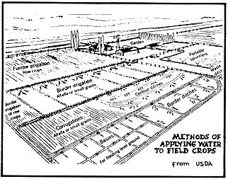 |
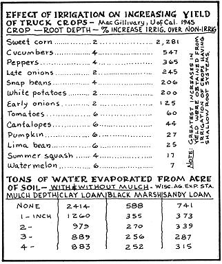 |
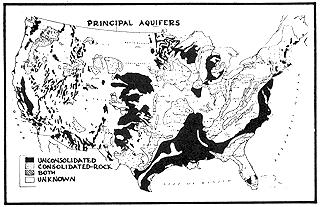 |
|
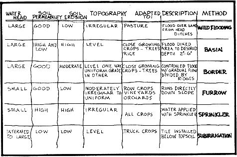 |
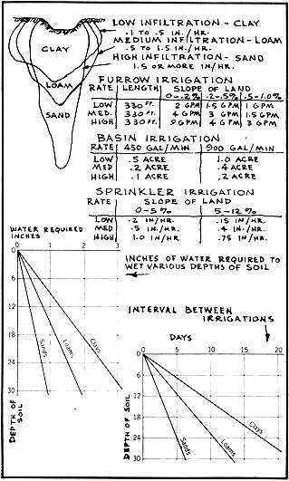 |
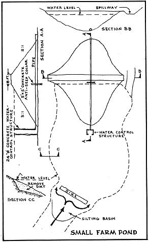 |
|
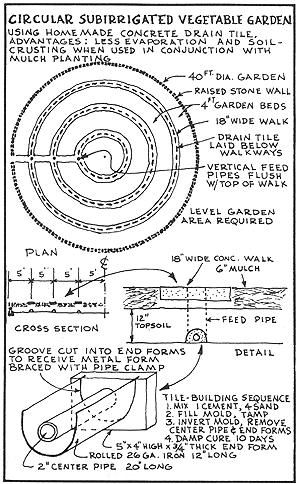 |
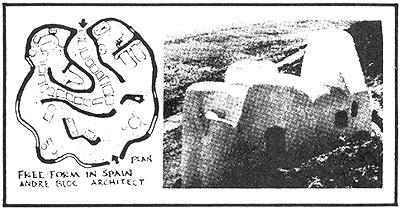 |
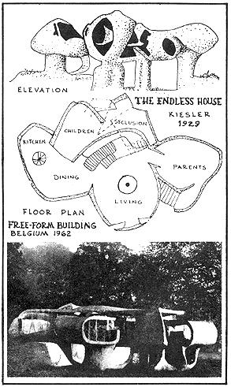 |
|
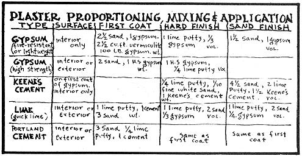 |
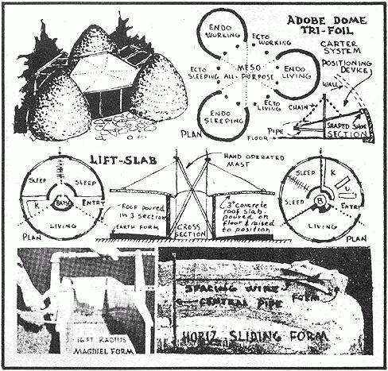 |
|